Plant
Chilled Water & District Cooling
Plant room design and installation, primary and secondary pumping, district cooling energy transfer stations and hydraulic balancing — staged to hold efficiency at part load.
Complete mechanical delivery for Gulf conditions: chilled water plant, district cooling, air handling and distribution, VRF and packaged systems — backed by our own Kingspan-authorised duct facility and the exclusive RUUD distribution rights for Oman.
Delivery scope
Cooling is the largest single load in a Gulf building, and most underperformance is designed in before anything is installed. We start with the load model — not an equipment schedule copied from a cooler climate.
Plant room design and installation, primary and secondary pumping, district cooling energy transfer stations and hydraulic balancing — staged to hold efficiency at part load.
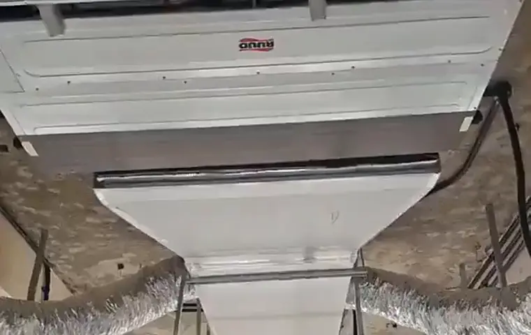
Air handling units, fresh-air and extract networks, and pre-insulated ductwork cut on our own CNC lines — airtightness controlled at fabrication, not corrected on site.
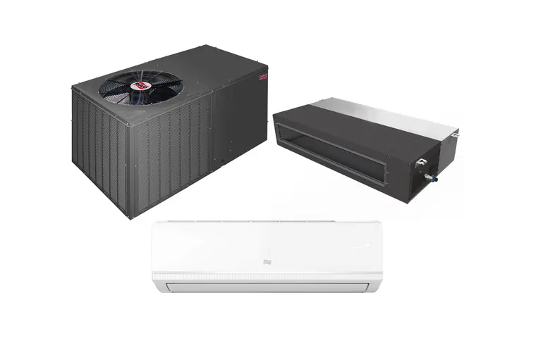
RUUD VRF for zoned commercial and large residential assets, packaged rooftop units for halls and showrooms, and ducted or cassette systems where a decentralised approach is the correct engineering answer.
Close-control cooling for technical and mission-critical spaces, with containment strategy and airflow modelling. Detailed further under Data Centres.
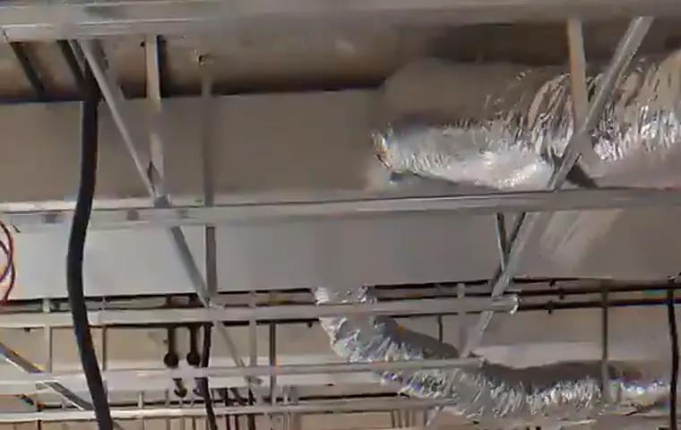
Car park ventilation, kitchen and laboratory extract, stairwell pressurisation and smoke management.
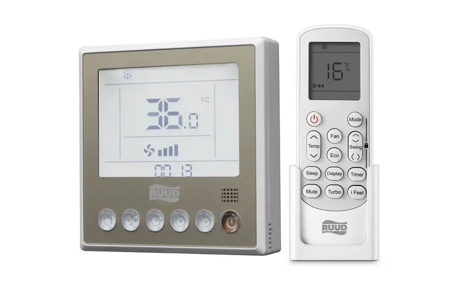
Plant sequencing, optimum start-stop and setpoint reset, integrated into the head-end we deliver under Smart Buildings.
In-country manufacturing
Ductwork is where most thermal loss and leakage happens. Fabricating it ourselves takes that variable out of your programme.

Inside Al Misfah
Cut on our own PiPal CNC table, closed in our own workshop, delivered to our own sites — which is why ductwork is never the item holding up a programme on our projects.
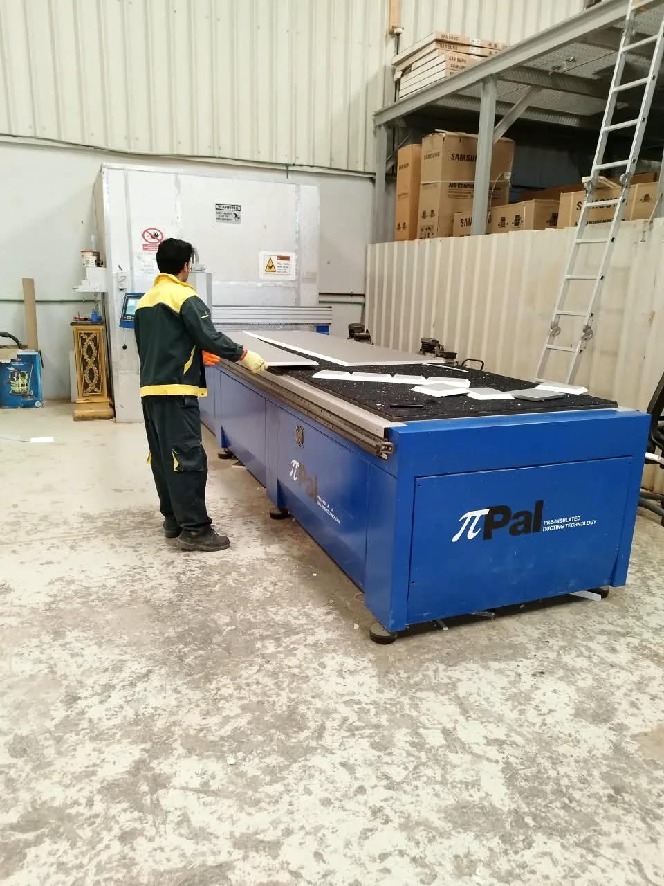
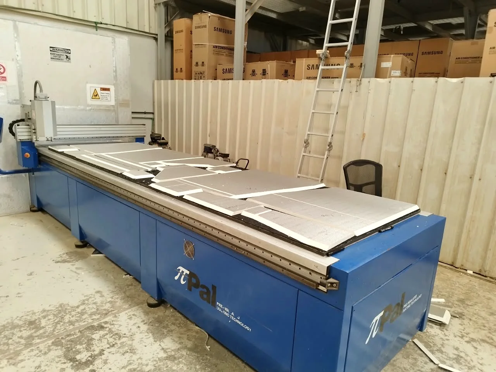

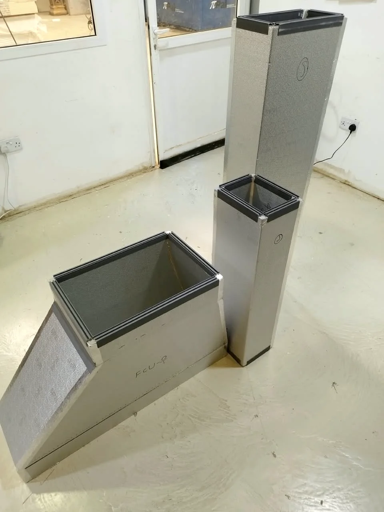
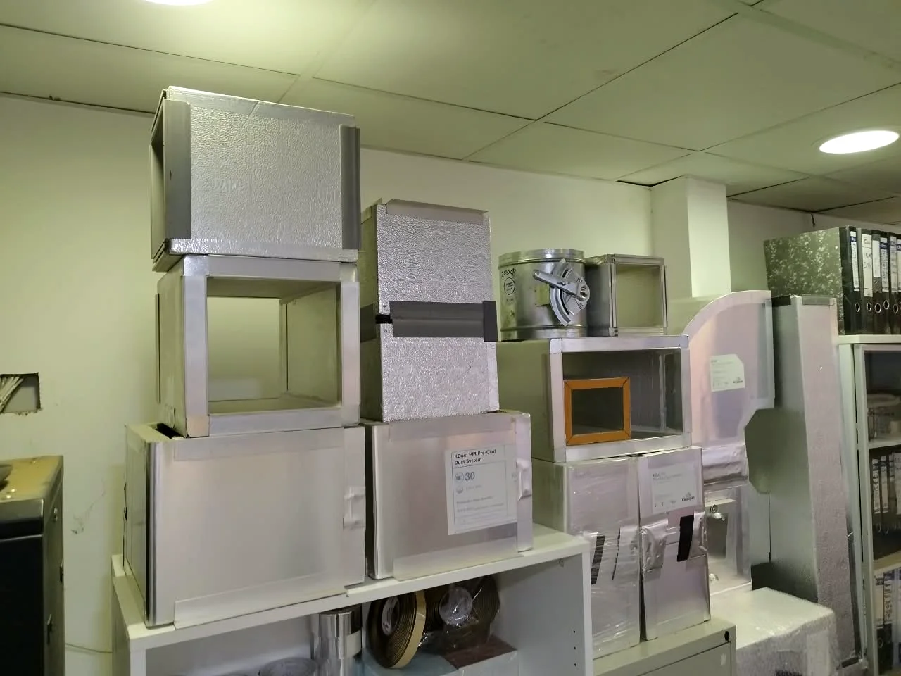
On site
Concealed ducted plant, pre-insulated distribution and grille sets — set out from coordinated drawings, installed by Mecamac labour under Mecamac supervisors.
How the plant works
Every element sized against the load model, staged so efficiency holds when the building is half empty.
Exclusive distribution
Not a reseller. Not one of several. The authorised and exclusive RUUD distributor for the Sultanate since 2015 — the full air conditioning range, stocked in Muscat, with factory warranty behind every unit.
How they are built
The RUUD range we stock is not a mild-climate product re-labelled for export. It is engineered and tested for the Gulf — and the film shows how.
The range we hold
Nine ranges held for specification in Oman — outdoor plant, concealed and exposed indoor units, and packaged rooftop.
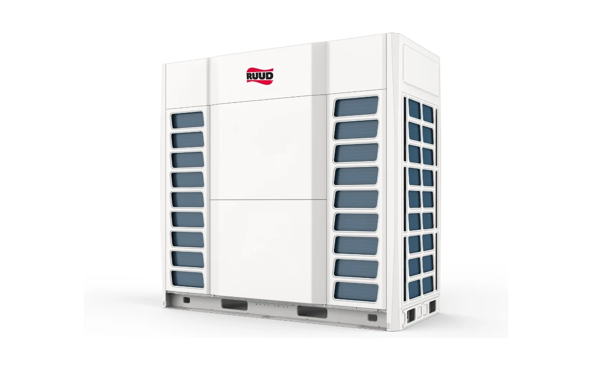
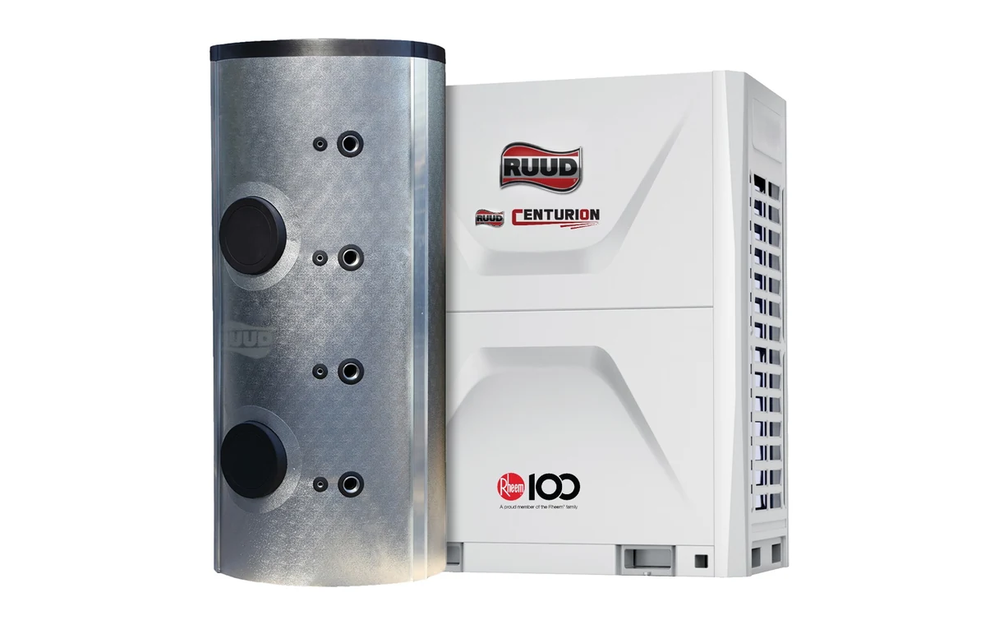
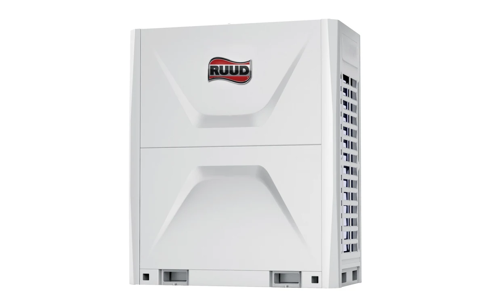
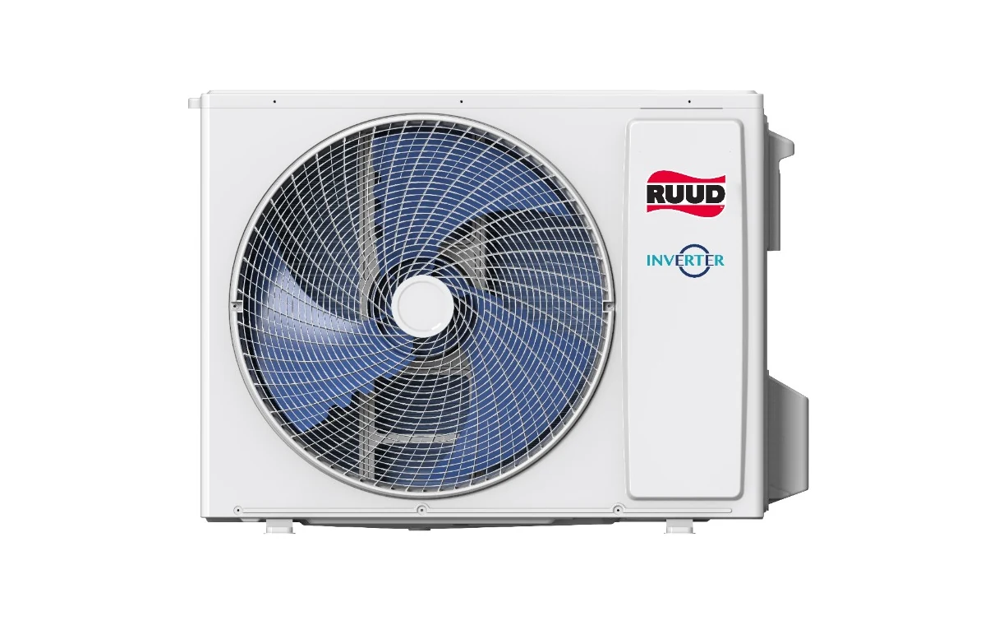
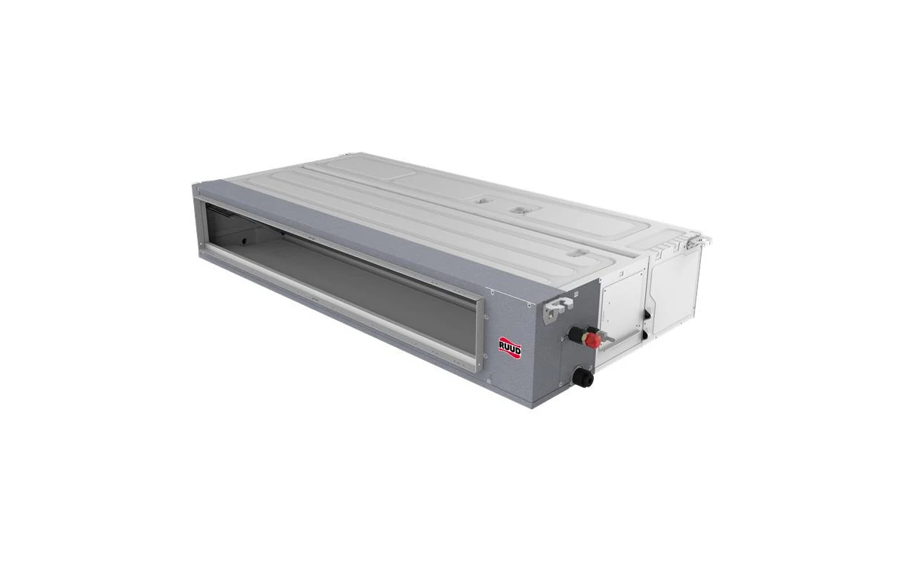
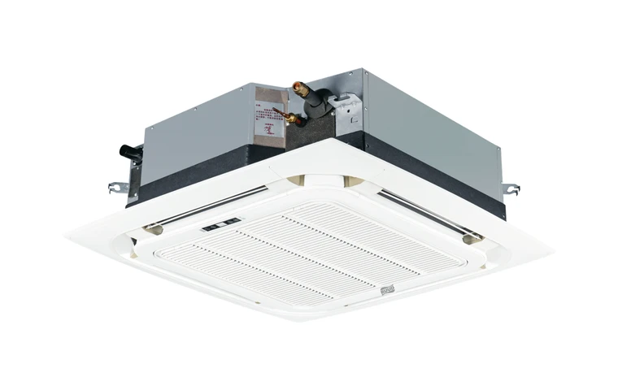
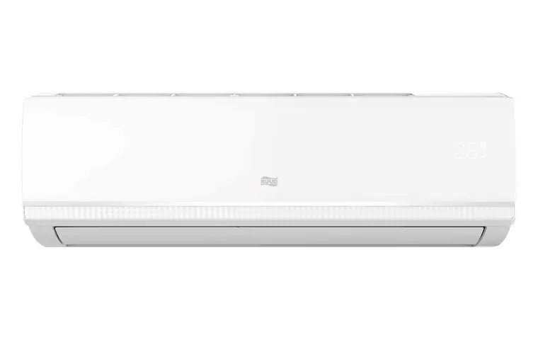
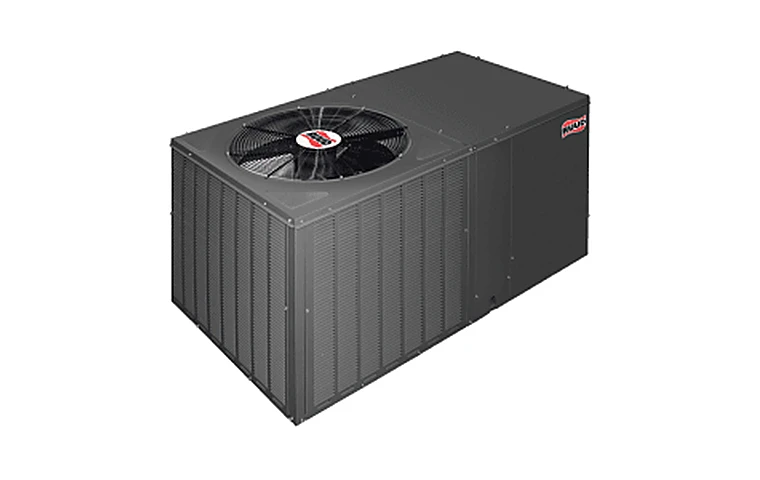
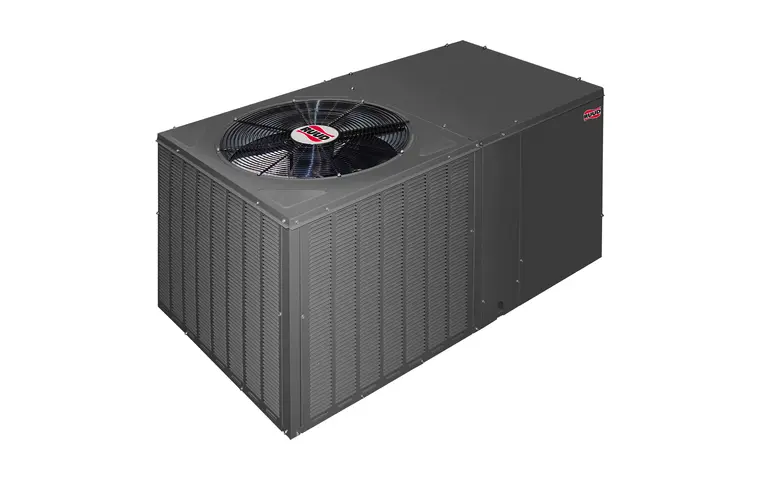
Energy calculator
Set your conditioned area, what cools the house today and how long it runs. The answer is in energy, not money: how much less your cooling would use. Every factor is listed openly and kept deliberately conservative, so a real installation should do better than the figure shown. For prices, message us.
Conservative assumptions: one ton of cooling per 18 m², 50% average seasonal compressor duty, seasonal EER credited to the existing equipment of 2.7 (packaged), 2.8 (concealed ducted), 2.9 (cassette) and 3.0 (wall split), against only 3.7 for the RUUD inverter system, 10% further saving from scheduled and occupancy setback, 0.45 kg CO₂ per kWh. No tariff and no money figures are used — this page does not price anything.
Selection guidance
| Criterion | Chilled Water | VRF | Packaged / DX |
|---|---|---|---|
| Typical application | Towers, hospitals, campuses, district schemes | Multi-zone commercial, hotels, large residences | Halls, showrooms, mosques, standalone units |
| Part-load efficiency | Strong with correct staging and variable flow | Strong — inverter modulation per zone | Moderate — depends on staging |
| Plant space required | Dedicated plant room and risers | Distributed outdoor units | Rooftop or adjacent slab |
| Metering & tenant billing | Straightforward at energy transfer station | Possible with system controllers | Limited granularity |
| Maintenance model | Centralised, specialist | Distributed, moderate access needs | Simple, unit-level |
Method
Heat load and system selection study.
Coordinated drawings and submittals.
In-house ductwork and procurement.
Self-delivered works under QA/QC.
Balancing, T&C and witnessed handover.
Technical questions
Load modelling and system selection follow ASHRAE methodology, with Gulf design ambients rather than generic international defaults. Equipment is selected against local peak conditions and derated accordingly, which is the most common cause of underperformance when systems are specified from imported schedules.
TAB is treated as a discipline in its own right and scheduled into the programme rather than compressed at the end. Water and air systems are proportionally balanced, readings recorded against design, and deviations resolved before handover. Records are issued as part of the O&M package.
Yes. We survey the installed condition, model actual versus design performance, and issue a remedial scope with a clear position on what is recoverable and what should be replaced. We take responsibility for what we recommend, which sometimes means advising against further spend on a system that will not reach the specification.
Structured AMC covering scheduled preventive visits, condition reporting with trend data, refrigerant and water treatment management, priority response commitments and genuine spare parts backed by our principal partnerships. Programmes cover systems we installed as well as those installed by others.
Because thermal loss and air leakage in the distribution network are permanent operating costs. Pre-insulated panel ductwork reduces both, is lighter on the structure, and installs faster. Since we fabricate it in-country, it also removes an import lead time from the critical path.
Share drawings, a specification or a scope outline and our engineers will return a considered technical approach with a clear commercial proposal.